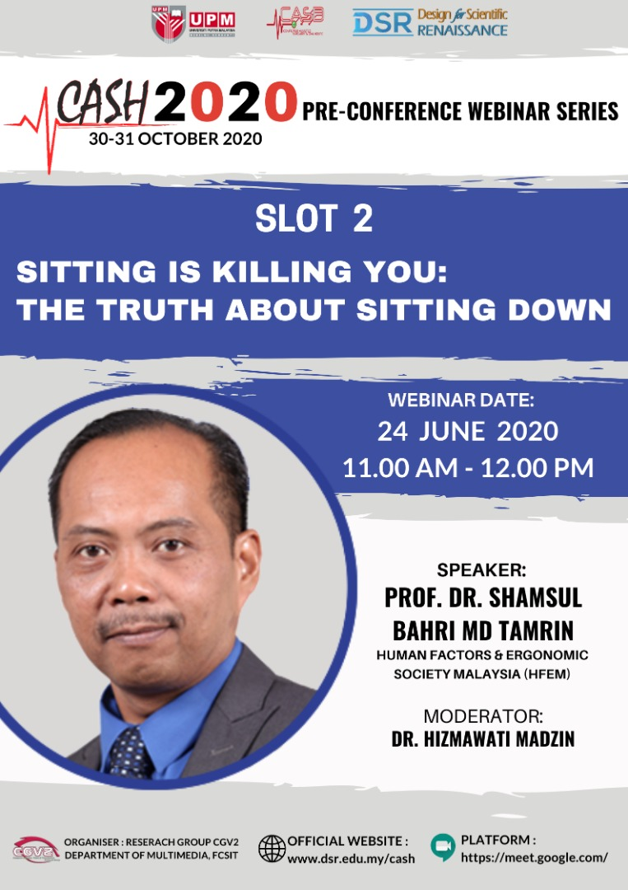
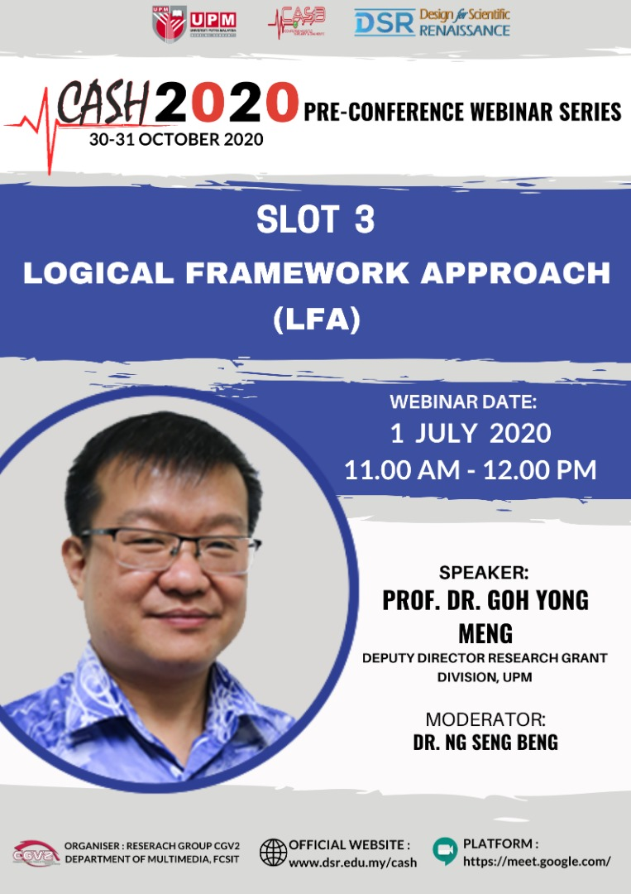
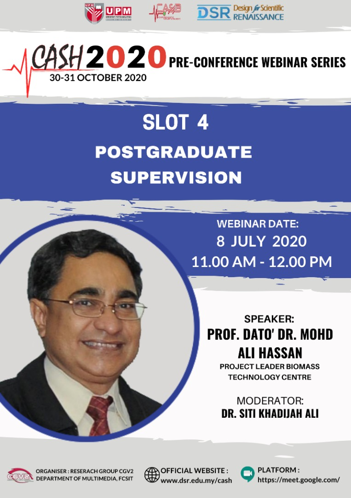
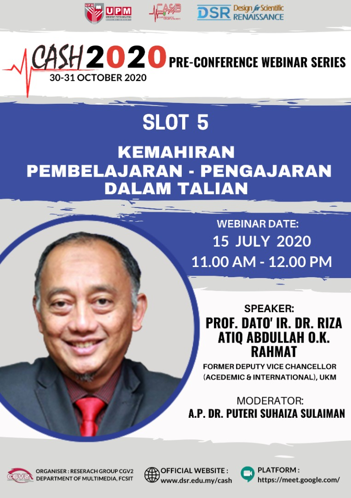

Computer Graphics, Vision and Visualization (CGV2) Research Group, Faculty of Computer Science and Information Technology, UPM is inviting you to join the CASH2020 Pre-Conference Webinar Series SLOT 1:
Title: Challenges for LRGS/TRGS Date: 17 June 2020 (Wednesday) Time: 11:00 am - 12:00 pm Registration Form:https://forms.gle/SQzQVfXNVryV6Sqg8 E-cert will be sent to you upon the completion of the attendance form on the 17th of June 2020
Speaker: Prof. Dr. Ku Ruhana Ku Mahamud School of Computing Universiti Utara Malaysia
Moderator: Dr. Nurul Amelina Nasharuddin Department of Multimedia Faculty of Computer Science and Information Technology Universiti Putra Malaysia
please click the link below to join via WEBEX Webinar: CASH2020 SLOT 1: CHALLENGES OF LRGS/TRGS Please be there at least 5 minutes before the event starts
This session will also be available via FB Live. Please subscribe to our channel CASH 2020 and turn on notification to get updates on live/latest videos. https://www.facebook.com/cashconference2020/
Slot 2: Prof. Dr. Shamsul Bahri Md Tamrin

Computer Graphics, Vision and Visualization (CGV2) Research Group, Faculty of Computer Science and Information Technology, UPM is inviting you to join the CASH2020 Pre-Conference Webinar Series SLOT 2:
Title: Sitting is Killing You: The Truth About Sitting Down Date: 24 June 2020 (Wednesday) Time: 11:00 am - 12:00 pm Registration Form:https://forms.gle/SQzQVfXNVryV6Sqg8 E-cert will be sent to you upon the completion of the attendance form on the 24th of June 2020
Speaker: Prof. Dr. Shamsul Bahri Md Tamrin Human Factors & Ergonomic Society Malaysia (HFEM) Faculty of Medicine & Health Sciences Universiti Putra Malaysia
Moderator: Dr. Hizmawati Madzin Department of Multimedia Faculty of Computer Science and Information Technology Universiti Putra Malaysia
please click the link below to join via ZOOM Webinar: CASH2020 SLOT 2: SITTING IS KILLING YOU: THE TRUTH ABOUT SITTING DOWN Please be there at least 5 minutes before the event starts
This session will also be available via FB Live. Please subscribe to our channel CASH 2020 and turn on notification to get updates on live/latest videos. https://www.facebook.com/cashconference2020/
Slot 3: Prof. Dr. Goh Meng

Computer Graphics, Vision and Visualization (CGV2) Research Group, Faculty of Computer Science and Information Technology, UPM is inviting you to join the CASH2020 Pre-Conference Webinar Series SLOT 3:
Title: Logical Framework Approach Date: 1 July 2020 (Wednesday) Time: 11:00 am - 12:00 pm Registration Form:https://forms.gle/SQzQVfXNVryV6Sqg8 E-cert will be sent to you upon the completion of the attendance form on the 1st of July 2020
Speaker: Prof. Dr. Goh Yong Deputy Director Research Grant Division Universiti Putra Malaysia
Moderator: Dr. Ng Seng Beng Department of Multimedia Faculty of Computer Science and Information Technology Universiti Putra Malaysia
please click the link below to join via GOOGLE MEET Webinar: CASH2020 SLOT 3: LOGICAL FRAMEWORK APPROACH (LFA) Please be there at least 5 minutes before the event starts
This session will also be available via FB Live. Please subscribe to our channel CASH 2020 and turn on notification to get updates on live/latest videos. https://www.facebook.com/cashconference2020/
Slot 4: Prof. Dato' Dr. Mohd Ali Hassan

Computer Graphics, Vision and Visualization (CGV2) Research Group, Faculty of Computer Science and Information Technology, UPM is inviting you to join the CASH2020 Pre-Conference Webinar Series SLOT 4:
Title: Postgraduate Supervision Date: 8 July 2020 (Wednesday) Time: 11:00 am - 12:00 pm Registration Form:https://forms.gle/wAQ7xbfMj3A9vqTa8 E-cert will be sent to you upon the completion of the attendance form on the 8th of July 2020
Speaker: Prof. Dato' Dr. Mohd Ali Hassan Project Leader Biomass Technology Centre
Moderator: Dr. Siti Khadijah Ali Department of Multimedia Faculty of Computer Science and Information Technology Universiti Putra Malaysia
please click the link below to join via ZOOM Webinar: CASH2020 SLOT 4: POSTGRADUATE SUPERVISION Please be there at least 5 minutes before the event starts
This session will also be available via FB Live. Please subscribe to our channel CASH 2020 and turn on notification to get updates on live/latest videos. https://www.facebook.com/cashconference2020/
Slot 4: Prof. Dato' Ir. Dr. Riza Atiq Abdullah O.K. Rahmat

Computer Graphics, Vision and Visualization (CGV2) Research Group, Faculty of Computer Science and Information Technology, UPM is inviting you to join the CASH2020 Pre-Conference Webinar Series SLOT 5:
Title: Kemahiran Pemelajaran - Pengajaran Dalam Talian Date: 15 July 2020 (Wednesday) Time: 11:00 am - 12:00 pm Registration Form:https://forms.gle/SQzQVfXNVryV6Sqg8 E-cert will be sent to you upon the completion of the attendance form on the 15th of July 2020
Speaker: Prof. Dato' Ir. Dr. Riza Atiq Abdullah O.K. Rahmat Former Deputy Vice Cancellor (Academic & International) University Kebangsaan Malaysia
Moderator: A.P Dr. Puteri Suhaiza Sulaiman Department of Multimedia Faculty of Computer Science and Information Technology Universiti Putra Malaysia
please click the link below to join via WEBEX Webinar: CASH2020 SLOT 5: KEMAHIRAN PEMBELAJRAN - PENGAJARAN DALAM TALIAN Please be there at least 5 minutes before the event starts
This session will also be available via FB Live. Please subscribe to our channel CASH 2020 and turn on notification to get updates on live/latest videos. https://www.facebook.com/cashconference2020/